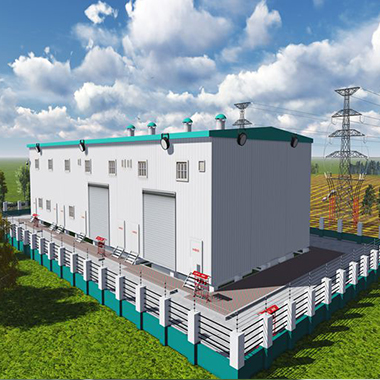

Projects

Smart Substation
Substation risk indices are incorporated into a preventative optimal power flow (OPF) to reduce the risk of critical substations. This risk-based dispatch represents an easily scalable, robust algorithm for reducing risk associated with substation losses.
Research on Demand Response Strategy based on Real-time Price of User Side
The real-time pricing (RTP) scheme is an ideal method to adjust the power balance between supply and demand in smart grid systems.
Research of Mobile Interactive Platform based on Educational Big Data Prediction Analysis
One of the promises of mining big data for insights in higher education is to enable a new level of evidence-based research into learning and teaching.
Learning Hashing based on Semantic Association Analysis for CRVO-ME in Medical Big Data
The clinical terms used to describe the ocular fundus reflect the degree of obstruction of the entire venous outflow from the retina (central retinal vein) and not just the central retinal vein alone.